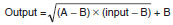

| Item |
Specifications |
| Model |
CJ1W-PH41U |
| Applicable Controller |
CJ/NJ Series |
| Type of Unit |
CJ-series Special I/O Unit |
| Mounting position |
CPU Rack or Expansion Rack |
| Maximum number of Units |
40 (within the allowable current consumption and power consumption range) |
| Unit numbers |
00 to 95 (Cannot duplicate Special I/O Unit numbers.) |
Areas for
exchanging
data with
the CPU
Unit |
Special I/O Unit
Area words in the
CIO Area
(Operation Data) |
10 words/Unit |
Isolated-type Universal Input Unit to CPU Unit:
All process values, process value alarms (LL, L, H, HH), rate-of-change alarms (L,
H), input errors (such as disconnection alarms), cold junction sensor errors, and
zero/span adjustment period end/notices. |
Special I/O Unit
words in the DM
Area
(Setting parameter) |
100 words/Unit |
CPU Unit to Isolated-type Universal Input Unit:
Operation settings, input type, input range (user set), temperature unit, process
value clamp direction for input burnout, scaling upper and lower limits, scaling
offset value, alarm hysteresis, alarm ON/OFF delay time, number of items for
moving average, Expansion Setting Area settings, process value alarm setting (L,
H), zero/span adjustment value. |
Expansion Control/
Monitor Area
(Expansion
Operation Data) |
46 words/Unit |
CPU Unit to Isolated-type Universal Input Unit:
Hold function selection start/reset, integral value calculation start/reset, zero/
span adjustment period flag
Isolated-type Universal Input Unit to CPU Unit:
All rate-of-change values, zero/span adjustment period notices (all inputs),
EEPROM errors, day of final adjustment date, top and valley detection flags, peak
and bottom values, top and valley values, integral value. |
Expansion Setting
Area
(Expansion Setting
parameter) |
100 words/Unit |
CPU Unit to Isolated-type Universal Input Unit:
Expansion Control/Monitor Area settings, square root calculation enable, rate-
ofchange input range, rate-of-change comparison time interval, rate-of-change
scaling upper and lower limits, zero/span adjustment position, zero/span
adjustment period and notice of days remaining, top and valley hysteresis,
integral value calculation integer unit and integer coefficient, temperature
resistance thermometer compensation enable, temperature resistance
thermometer reference resistance, cold junction compensation method,
process value alarm settings (LL, HH), rate-of-change alarm settings (L, H). |
| Number of inputs |
4 |
| Input type |
Resolution:
1/256,000
(Conversion period:
60 ms) |
Pt100 (JIS, IEC 3-wire), JPt100 (3-wire), Pt1000 (3-wire), Pt100 (JIS, IEC 4-
wire), K, J, T, E, L, U, N, R, S, B, WRe5-26, PLII, 4 to 20 mA, 0 to 20 mA, 1 to 5 V,
0 to 1.25 V, 0 to 5 V, 0 to 10 V, ±100 mV user-set range, -1.25 to 1.25 V, -5 to
5 V, -10 to 10 V, ±10 V user-set range, potentiometer (all inputs). The input
type, input range, and scaling can be set for individual inputs. The input range for
DC inputs, however, can be set only for input types with user-set input ranges. |
Resolution: 1/64,000
(Conversion period:
10 ms) |
Pt100 (JIS, IEC 3-wire), JPt100 (3-wire), Pt100 (JIS, IEC 4-wire), K, J, T, E, L, U,
N, R, S, B, WRe5-26, PLII, 4 to 20 mA, 0 to 20 mA, 1 to 5 V, 0 to 1.25 V, 0 to 5 V,
0 to 10 V, ±100 mV user-set range, -1.25 to 1.25 V, -5 to 5 V, -10 to 10 V,
±10 V user-set range (all inputs). The input type, input range, and scaling can be
set for individual inputs. The input range for DC inputs, however, can be set only
for input types with user-set input ranges. |
Resolution: 1/16,000
(Conversion period:
5 ms) |
K, E |
Applicable standards for
resistance thermometer and
thermocouple inputs |
Pt100: JIS C1604-1997, IEC 60751-95
JPt100: JIS C1604-1989
K, J, T, E, N, R, S, B: JIS C1602-1995
L, U: DIN 43710-1985
WRe5-26: ASTM E988-96
PLII: ASTM E1751-00 |
| Scaling |
Data to be stored in the allocated words in the CIO area must be scaled (with
user-set minimum and maximum values for data and offsets). The inputs are set
individually. Data can be converted at 0% to 100%. |
Data storage in the Special I/O
Unit Area in the CIO Area |
The values derived from carrying out the following processing in order of the
actual process data in the input range are stored in four digits hexadecimal
(binary values) in the allocated words in the Special I/O Unit Area.
1) Averaging → 2) Scaling → 3) Zero/span adjustment → 4) Square root
calculation → 5) Offset compensation → 6) Output limits |
| Accuracy (25 °C) |
Resistance thermometer and thermocouple inputs:
±0.05% (The accuracy depends on the input type and the measured temperature.
For details, refer to the Accuracy and Temperature Coefficient According to
Resistance Thermometer and Thermocouple Input Types and Measured
Temperatures on Data Sheet.
Current or voltage input: ±0.05%
Potentiometer input: ±1% |
| Temperature coefficient |
Resistance thermometer and thermocouple inputs:
The temperature coefficient depends on the input type and the measured
temperature. For details, refer to the Accuracy and Temperature Coefficient
According to Resistance Thermometer and Thermocouple Input Types and
Measured Temperatures on Data Sheet.
Current or voltage input: ±80 ppm/°C (for full scale)
Potentiometer input: ±100 ppm/°C (for full scale) |
| Cold junction compensation error |
Thermocouple input: ± 1.2 °C |
| Resolution |
1/256,000 (Conversion period: 60 ms) (See note.), 1/64,000 (Conversion period:
10 ms), 1/16,000 (Conversion period: 5 ms)
Note: The resolution for potentiometer inputs is 1/4,000. |
| Input signal range |
Resistance thermometer, thermocouple, ±100 mV user-set inputs:
-15% to 115% of measurable input range
4 to 20 mA, 1 to 5 V, 0 to 1.25 V, 0 to 5 V, 0 to 10 V inputs: -15% to 115%
0 to 20-mA inputs: 0% to 115%
-1.25 to 1.25 V, -5 to 5 V, -10 to 10 V, ±10 V user-set range inputs: -7.5% to
107.5%
Potentiometer input: -15% to 115% of 0 to 2,500 Ω |
| Influence of lead wire resistance |
Resistance thermometer inputs:
0.06°C/Ω (20 Ω max.) (3-wire)
0.006°C/Ω (20 Ω max.) (4-wire) |
| Input detection current |
Resistance thermometer inputs: Approx. 0.21 mA (3-wire), approx. 0.42 mA (4-
wire)
Potentiometer input: Approx. 0.21 mA |
| Absolute maximum ratings |
Thermocouple, ±100 mV user-set range inputs: ±130 mV
Current inputs: 30 mA
Voltage inputs (excluding ±100 mV user-set range): ±15 V |
| Input impedance |
Thermocouple, ±100 mV user-set range inputs: 20 kΩ min.
Current inputs: 150 Ω max.
Voltage inputs (excluding ±100 mV user-set range): 1 MΩ min. |
Input disconnection detection
current |
Thermocouple, ±100 mV user-set range inputs: Approx. 0.1 μA |
| Warmup time |
Resistance thermometer inputs: 30 min
Thermocouple, ±100 mV user-set range inputs: 45 min
Current or voltage inputs (excluding ±100 mV user-set range): 30 min
Potentiometer input: 10 min |
| Response time |
1/256,000 resolution:
Resistance thermometer inputs:
180 ms max. (travel time from input 0% to 90%, for step input and with moving
average for 1 sample)
Thermocouple, ± 100 mV user-set range inputs:
180 ms max. (travel time from input 0% to 90%, for ± 100 mV step input and with
moving average for 1 sample)
Current or voltage input:
180 ms max. (travel time from input 0% to 90%, for ± 10 V step input and with
moving average for 1 sample)
Potentiometer input:
180 ms max. (travel time from input 0% to 90%, for step input and with moving
average for 1 sample)
1/64,000 resolution:
Resistance thermometer inputs:
100 ms max. (travel time from input 0% to 90%, for step input and with moving
average for 4 samples)
Thermocouple, ± 100 mV user-set range inputs:
100 ms max. (travel time from input 0% to 90%, for ± 100 mV step input and with
moving average for 4 samples)
Current or voltage inputs:
100 ms max. (travel time from input 0% to 90%, for ± 10 V step input and with
moving average for 4 samples)
1/16,000 resolution:
Thermocouple inputs:
100 ms max. (travel time from input 0% to 90%, for ± 100 mV step input and with
moving average for 4 samples)
|
| Conversion period |
60 ms/4 inputs (1/256,000 resolution), 10 ms/4 inputs (1/64,000 resolution, 5
ms/4 inputs (1/16,000 resolution) |
Maximum time to store data in
CPU Unit |
Conversion period + one CPU Unit cycle |
Input disconnection and input
error detection |
Resistance thermometer, thermocouple, ±100 mV user-set range,
potentiometer inputs:
Input Error Flag turns ON when a disconnection occurs or when 115% or -15% of
the measurable input range is exceeded.
The process value clamp direct direction for when a disconnection occurs can be
specified. (High: 115% of set input range. Low: -15% of set input range.)
Disconnection detection time:
Approx. 5 s max. (4-wire Pt100)
Approx. 1 s max. ( ±100 mV user-set range)
Approx. 0.5 s max. (not 4-wire Pt100 or ±100 mV user-set range)
4 to 20 mA, 1 to 5 V, 0 to 1.25 V, 0 to 5 V, 0 to 10 V inputs:
An error is detected and the Input Error Flag turns ON when a disconnection
occurs or when 115% or -15% of the measurable input range is exceeded.
When a disconnection occurs in the 4 to 20 mA/1 to 5 V range, the -15%
process value is stored.
When a disconnection occurs in any other range, a process value the same as
for a 0 V input is stored.
0 to 20 mA inputs:
An error is detected and the Input Error Flag turns ON when 115% of the
measurable input range is exceeded. When a disconnection occurs, a process
value the same as for a 0 mA input is stored.
-1.25 to 1.25 V, -5 to 5 V, -10 to 10 V, ±10 V user-set range inputs:
An error is detected and the Input Error Flag turns ON when 107.5% or -7.5% of
the measurable input range is exceeded. When a disconnection occurs, a
process value the same as for a 0 V input is stored. |
| Function |
Process value alarm |
Four process value alarms (HH, H, LL, L), hysteresis, and ON/OFF-delay timer (0
to 60 s) can be set. |
Rate-of-change
calculation |
Calculates the amount of change per process value comparison time interval
(Either 1 to 16 s or the conversion period can be set.) |
Rate-of-change
alarm |
Two rate-of-change alarms (H, L), hysteresis, and ON/OFF-delay timer (0 to 60
s) can be set (shared with process value alarm). |
Process value
averaging
(input filter) |
Calculates the moving average for the specified number of past process values (1
to 128), and stores that value in the CIO Area as the process value. |
Square root
extraction |
When the process value scaling maximum value is A and the minimum value is B:

Dropout: Output approx. 7% maximum linear (output = input) characteristics
Note 1.
The square root function is enabled for DC inputs only. It is not performed for
temperature inputs.
Note 2.
The square root function is enabled only when the maximum scaling value is
greater than the minimum value. It is not performed when the minimum value is
greater.
Note 3.
When performing square root calculation, set the maximum and minimum
scaling values to the scaling values following square root extraction of the
flowrate or other input value. |
Adjustment period
control |
When zero/span adjustment is executed, the date is internally recorded at the
Unit.
When the preset zero/span adjustment period and the notice of days remaining
set in the Expansion Setting Area have elapsed, this function turns ON a warning
flag to give notice that it is time for readjustment. |
Peak and bottom
detection |
Detects the maximum (peak) and minimum (bottom) process values, from when
the Hold Start Bit (output) allocated to the Expansion Control/Monitor Area
turns ON until it turns OFF. These values are stored as the peak and bottom
values in the Expansion Control/Monitor Area. |
Top and valley
detection |
This function detects the top and valley values for process values, from when the
Hold Start Bit (output) allocated to the Expansion Control/Monitor Area turns
ON until it turns OFF. These values are stored as the top and valley values in the
Expansion Control/Monitor Area. |
Integral value
calculation |
This function calculates the process value's time integral. The integral value is
calculated and the result is output to the Expansion Control/Monitor Area when
the Integral Value Calculation Start Bit in the Expansion Control/Monitor Area is
turned ON. |
Cold junction
compensation
method |
Specifies whether cold junction compensation is to be executed internally or
externally.
Note: This function is supported only for thermocouple inputs. |
Resistance
thermometer input
compensation |
Compensation is enabled for a connected resistance thermometer by setting the
resistance for 23 °C.
Note: This function is supported only for resistance thermometer inputs. |
| Isolation |
Between inputs and Controller signals, and between inputs: Power supply =
Transformer, Signal = Digital isolator |
| Insulation resistance |
20 MΩ (at 500 V DC) between all inputs |
| Dielectric strength |
Between all inputs: 500 V AC, at 50 or 60 Hz, for 1 min, leakage current 10 mA
max. |
| External connections |
Terminal block (detachable) |
| Unit number settings |
Set by rotary switches on front panel, from 0 to 95. |
| Indicators |
Three LED indicators on front panel (for normal operation, errors detected at the
Universal Input Unit, and errors detected at the CPU Unit). |
| Front panel connector |
Input connector terminal block (detachable) |
Current consumption
(supplied by Power Supply Unit) |
5 V DC at 300 mA max. |
| Dimensions |
31 × 90 × 65 mm (W × H × D) |
| Weight |
150 g max. |
| Standard accessories |
One cold junction sensor (mounted to terminal block) |